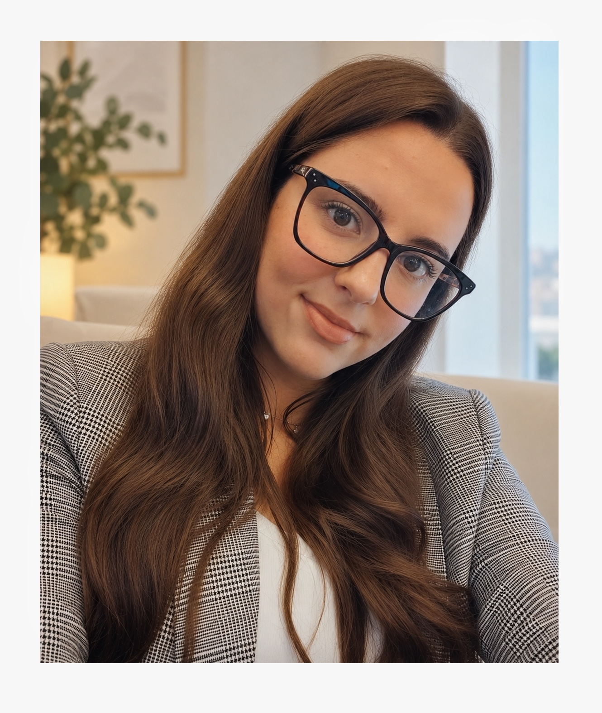

Ansiedad y estrés
Comprender lo que sientes y aprender herramientas para manejar la preocupación, la tensión y las exigencias del día a día.
Un acompañamiento psicológico cercano y profesional para comprender lo que te ocurre, afrontar tus dificultades y avanzar a tu ritmo.
Terapia online en toda España y atención presencial en Sevilla, en espacios profesionales concertados y previa consulta.

A veces no hace falta tener todas las respuestas para pedir ayuda. Si algo te preocupa, te desborda o está afectando a tu bienestar, podemos dedicar un espacio a comprenderlo y buscar nuevas formas de afrontarlo.
Comprender lo que sientes y aprender herramientas para manejar la preocupación, la tensión y las exigencias del día a día.
Abordar la tristeza, la desmotivación y los cambios que pueden hacer que te cueste disfrutar de las cosas.
Explorar tus emociones, fortalecer la autoestima y desarrollar recursos para afrontar situaciones difíciles.
Comprender las dificultades en tus relaciones, mejorar la comunicación y aprender a establecer límites saludables.
Comprender patrones de conducta y trabajar estrategias para avanzar hacia cambios sostenibles.
Conocerte mejor, identificar necesidades y construir formas de vivir más acordes con tus valores.
Soy Estefanía Doblas Medina, psicóloga general sanitaria. Entiendo la terapia como un espacio de confianza en el que puedas hablar con libertad, sentirte escuchado/a y comprender mejor aquello que estás viviendo.
Mi forma de trabajar se basa en la terapia cognitivo-conductual, adaptando el proceso a tus necesidades y objetivos. Trabajaremos para identificar patrones de pensamiento y conducta, desarrollar herramientas prácticas y encontrar nuevas maneras de afrontar las dificultades.
Me considero una persona cercana y empática, y para mí es importante que te sientas acompañado/a, respetando siempre tu ritmo y tu historia.
Empezar puede generar dudas. Te explicaré el proceso con claridad y resolveremos las preguntas que tengas antes de comenzar.
Me escribes por WhatsApp o completas el formulario de solicitud.
Comentamos brevemente qué necesitas y resolvemos tus dudas iniciales.
Valoramos la modalidad online o presencial en Sevilla y acordamos una cita.
Definimos objetivos de trabajo y avanzamos con herramientas adaptadas a ti.
Quiero que tengas la información necesaria para decidir con tranquilidad si este espacio es adecuado para ti.
20 minutos para conocernos, comentar brevemente qué necesitas y resolver tus dudas iniciales.
Sesión de psicología de 50 minutos. Atención online en toda España.
Atención en Sevilla en un despacho profesional concertado, previa consulta.
La toma de contacto gratuita es una conversación inicial de orientación y no sustituye a una sesión de terapia. La atención presencial y su ubicación se confirmarán antes de reservar.
Puedes escribirme para consultar tus dudas, solicitar la toma de contacto gratuita de 20 minutos o completar el formulario para pedir una cita.